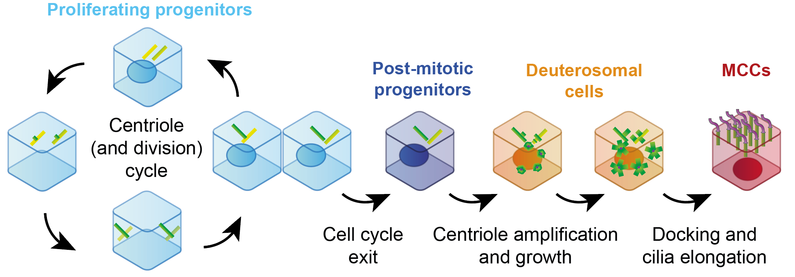

Demonstration: Dimensional reduction visualization and clustering
Goals:
- Perform different dimensionality reductions
- Try out different cell clustering approaches
- Visualize gene expression in each cluster
1. Dimensionality reduction
I am currently working on the differentiation of neural progenitor cells into multiciliated cells:

Let’s load the data I have provided and inspect it:
To perform PCA embedding, we need normalized data! Is this data normalized?
cnts <- as(assay(MCCs, 'counts'), 'dgCMatrix')
colnames(cnts) <- MCCs$Barcode
rownames(cnts) <- rownames(MCCs)
df <- tibble(
gene = rownames(cnts),
detection_rate = rowMeans(cnts > 0),
mean = rowMeans(cnts),
variance = apply(cnts, 1, var)
)
p <- ggplot(df, aes(x = mean, y = variance)) +
geom_point(alpha = 0.3) +
geom_density_2d(size = 0.3) +
geom_abline(intercept = 0, slope = 1, color = "red") +
scale_y_log10(
breaks = scales::trans_breaks("log10", function(x) 10^x),
labels = scales::trans_format("log10", scales::math_format(10^.x))
) +
scale_x_log10(
breaks = scales::trans_breaks("log10", function(x) 10^x),
labels = scales::trans_format("log10", scales::math_format(10^.x))
) +
labs(x = 'Gene expression mean', y = 'Gene expression variance') +
theme_bw()
ggsave('data/MCCs/variance~mean.pdf')The gene expression variance is more or less equals to the gene average expression, as it should be assuming counts follow a Poisson distribution. This suggests that the data is probably already normalized!
We can now flag HVGs and use them for dimensionality reduction.
assay(MCCs, 'logcounts') <- log1p(counts(MCCs))
MCCs_variance <- scran::modelGeneVar(MCCs)
MCCs_variance
quantile(MCCs_variance$bio, seq(0, 1, 0.1))
quantile(MCCs_variance$tech, seq(0, 1, 0.1))
HVGs <- scran::getTopHVGs(MCCs_variance, prop = 0.1)
rowData(MCCs)$isHVG <- rownames(MCCs) %in% HVGs
head(rowData(MCCs))
table(rowData(MCCs)$isHVG)
# Visualizing the mean-variance fit, coloring HVGs
df <- tibble(
mean = metadata(MCCs_variance)$mean,
var = metadata(MCCs_variance)$var,
trend = metadata(MCCs_variance)$trend(mean),
HVG = rowData(MCCs)$isHVG
)
p <- ggplot(df) +
geom_point(aes(x = mean, y = var, col = HVG), alpha = 0.4) +
geom_line(aes(x = mean, y = trend), col = 'darkred') +
theme_minimal() +
labs(x = 'Gene mean exp. (log1p)', y = 'Gene exp. variance')
ggsave('data/MCCs/variance~mean_HVGs.pdf')Is the default gene variance fitting approach good? Can we try out another approach?
MCCs_CV <- scran::modelGeneCV2(MCCs)
MCCs_CV
quantile(MCCs_CV$bio, seq(0, 1, 0.1))
quantile(MCCs_CV$tech, seq(0, 1, 0.1))
HVGs_2 <- scran::getTopHVGs(MCCs_CV, prop = 0.1, var.field="ratio")
rowData(MCCs)$isHVG_2 <- rownames(MCCs) %in% HVGs_2
head(rowData(MCCs))
table(rowData(MCCs)$isHVG_2)
# Visualizing the mean-CV2 fit, coloring HVGs
df <- tibble(
mean = metadata(MCCs_CV)$mean,
CV2 = metadata(MCCs_CV)$cv2,
trend = metadata(MCCs_CV)$trend(mean),
HVG = rowData(MCCs)$isHVG_2
)
p <- ggplot(df) +
geom_point(aes(x = mean, y = CV2, col = HVG), alpha = 0.4) +
geom_line(aes(x = mean, y = trend), col = 'darkred') +
scale_x_log10() + scale_y_log10() +
theme_minimal() +
labs(x = 'Gene mean exp.', y = 'Gene exp. CV2')
ggsave('data/MCCs/cv2~mean_HVGs.pdf')Fitting gene expression CV2 ~ mean seems to be slightly more robust than gene expression variance ~ mean, here. We will use these HVGs for dimensionality reduction.
Now we can embed in PCA:
set.seed(1000)
MCCs <- scran::denoisePCA(
MCCs,
technical = MCCs_variance,
subset.row = HVGs_2,
min.rank = 15
)
dim(as.data.frame(reducedDim(MCCs)))
head(as.data.frame(reducedDim(MCCs)))
p <- cowplot::plot_grid(
scater::plotReducedDim(MCCs, 'PCA', colour_by = 'detected'),
scater::plotReducedDim(MCCs, 'PCA', colour_by = 'sum')
)
ggsave('data/MCCs/pca.pdf')2. Cell clustering
We can cluster cells (embedded in PCA space) using different methods:
- a hierarchical clustering approach
- a k-means approach
- a graph-based approach
set.seed(1000)
pca <- reducedDim(MCCs, 'PCA')
rownames(pca) <- MCCs$Barcode
# Hierarchical clustering
dists <- dist(pca)
hclusts <- hclust(dists)
MCCs$cluster_hclust <- factor(cutree(hclusts, k = 5))
# k-means clustering
kmeans <- kmeans(pca, centers = 5)
MCCs$cluster_kmeans <- factor(kmeans$cluster)
# Shared k-Nearest Neighbors graph clustering
graph <- bluster::makeSNNGraph(pca)
communities <- igraph::cluster_louvain(graph)
MCCs$cluster_SNN <- factor(communities$membership)p <- cowplot::plot_grid(
scater::plotReducedDim(MCCs, 'PCA', colour_by = 'cluster_hclust', text_by = 'cluster_hclust') + ggtitle('PCA, hierarchical clusters'),
scater::plotReducedDim(MCCs, 'PCA', colour_by = 'cluster_kmeans', text_by = 'cluster_kmeans') + ggtitle('PCA, k-means clusters'),
scater::plotReducedDim(MCCs, 'PCA', colour_by = 'cluster_SNN', text_by = 'cluster_SNN') + ggtitle('PCA, SNN-graph clusters')
)
ggsave('data/MCCs/clusters_PCA.pdf')We can embed MCCs in UMAP space to better visualize the clusters
set.seed(1000)
MCCs <- scater::runUMAP(MCCs)
p <- cowplot::plot_grid(
scater::plotReducedDim(MCCs, 'UMAP', colour_by = 'cluster_hclust', text_by = 'cluster_hclust') + ggtitle('UMAP, hierarchical clusters'),
scater::plotReducedDim(MCCs, 'UMAP', colour_by = 'cluster_kmeans', text_by = 'cluster_kmeans') + ggtitle('UMAP, k-means clusters'),
scater::plotReducedDim(MCCs, 'UMAP', colour_by = 'cluster_SNN', text_by = 'cluster_SNN') + ggtitle('UMAP, SNN-graph clusters')
)
ggsave('data/MCCs/clusters_UMAP.pdf')A new approach to check cell clustering is to leverage bluster package:
pca <- reducedDim(MCCs, 'PCA')
rownames(pca) <- MCCs$Barcode
evalClusters <- bluster::bootstrapStability(pca, clusters = MCCs$cluster_SNN, mode = "ratio", BLUSPARAM = bluster::NNGraphParam())
pheatmap::pheatmap(evalClusters, breaks = seq(-1, 1, length=101), cluster_rows = FALSE, cluster_cols = FALSE)3. Gene expression visualization
First we can order the clusters with a sensible order.
labels <- c(
'1' = 'H',
'2' = 'G',
'3' = 'F',
'4' = 'D',
'5' = 'E',
'6' = 'C',
'7' = 'B',
'8' = "B'",
'9' = "B'''",
'10' = 'A'
)
MCCs$label <- labels[MCCs$cluster_SNN]We can check expression of known markers of MCC progenitors, or differentiating progenitors, or terminally differentiated progenitors.
genes <- c(
'Mki67',
'Cdk1',
'Ube2c',
'Id3', 'Id4',
'Ccno', 'Mcidas', 'Cdc20b',
'Tmem212', 'Nnat'
)
# Plot clusters and gene expr. for a single gene
gene <- genes[[1]]
df <- tibble(
UMAP1 = reducedDim(MCCs, 'UMAP')[, 1],
UMAP2 = reducedDim(MCCs, 'UMAP')[, 2],
annot = MCCs$label,
expr = as.vector(logcounts(MCCs[gene,])),
)
p <- cowplot::plot_grid(
ggplot(df, aes(x = UMAP1, y = UMAP2, col = annot)) +
ggrastr::geom_point_rast() +
ggtitle(gene) +
theme_bw(),
ggplot(df, aes(x = UMAP1, y = UMAP2, col = expr)) +
ggrastr::geom_point_rast() +
scale_color_distiller(palette = 'YlOrRd', direction = 1) +
theme_bw(),
ggplot(df, aes(x = annot, y = expr, fill = annot)) +
geom_violin(scale = 'width') +
theme_bw(),
nrow = 1, align = 'vh', axis = 'trbl'
)
ggsave('data/MCCs/Mki67_UMAP.pdf', width = 10, height = 3)
# Multiple genes in a `lapply` function
p <- lapply(genes, function(gene) {
message(gene)
df <- tibble(
UMAP1 = reducedDim(MCCs, 'UMAP')[, 1],
UMAP2 = reducedDim(MCCs, 'UMAP')[, 2],
annot = MCCs$label,
expr = as.vector(logcounts(MCCs[gene,])),
)
cowplot::plot_grid(
ggplot(df, aes(x = UMAP1, y = UMAP2, col = annot)) +
ggrastr::geom_point_rast() +
ggtitle(gene) +
theme_bw(),
ggplot(df, aes(x = UMAP1, y = UMAP2, col = expr)) +
ggrastr::geom_point_rast() +
scale_color_distiller(palette = 'YlOrRd', direction = 1) +
theme_bw(),
ggplot(df, aes(x = annot, y = expr, fill = annot)) +
geom_violin(scale = 'width') +
theme_bw(),
nrow = 1, align = 'vh', axis = 'trbl'
)
}) %>% cowplot::plot_grid(plotlist = ., ncol = 1)
ggsave('data/MCCs/gene-expr_UMAP.pdf', w = 15, h = 15)